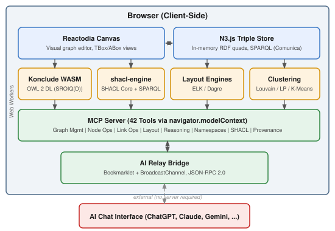

Ontosphere: A Zero-Install Semantic Web Workbench with In-Browser OWL 2 DL Reasoning
Abstract
Ontology engineering has traditionally required installing desktop applications such as Protégé or deploying server-side infrastructure, creating a significant barrier to entry for newcomers, educators, and practitioners who need to explore or author knowledge graphs quickly. We present Ontosphere, a zero-install, browser-based semantic web workbench that runs entirely client-side. Ontosphere integrates an in-memory RDF triple store (N3.js), a visual graph editor (Reactodia), and — to our knowledge — the first in-browser OWL 2 DL reasoner, achieved by compiling Konclude to WebAssembly with SharedArrayBuffer-backed threading. The system further exposes 42 tools via the Model Context Protocol (MCP), enabling any MCP-compatible AI agent to manipulate, reason over, and validate knowledge graphs through natural-language interaction. A bookmarklet-based AI Relay Bridge extends this integration to arbitrary AI chat interfaces without requiring API keys or server infrastructure. Ontosphere is available as a live deployment at https://thhanke.github.io/ontosphere/ under the Apache 2.0 licence.
Keywords
- Ontology Engineering
- Semantic Web
- OWL 2 DL Reasoning
- Knowledge Graph Visualization
- Model Context Protocol
- SHACL Validation
- Browser-Based Tools
Introduction
Ontology engineering remains a cornerstone of the Semantic Web, yet the available tools impose substantial prerequisites. Protégé [5], the de facto standard, requires Java and local installation; server-based platforms demand deployment infrastructure; and even lightweight browser tools like WebVOWL [6] offer only read-only views without editing or reasoning. These requirements create friction in educational settings, collaborative workshops, and rapid prototyping scenarios where participants may lack the ability or permission to install software.
We address this gap with Ontosphere, a semantic web workbench that runs entirely in the browser. A user opens a URL and immediately has access to a full-featured ontology editor with visual graph authoring, OWL 2 DL reasoning, SHACL validation, and AI-agent integration — with no installation, no server, and no account creation. All computation, including description-logic inference, executes client-side via Web Workers and WebAssembly.
The contributions of this work are threefold:
- In-browser OWL 2 DL reasoning with full explanations. We compile the Konclude tableau reasoner [1] to WebAssembly and execute it in a SharedArrayBuffer-backed Web Worker, providing full SROIQ(D) expressivity within the browser — a capability not previously available in any browser-based ontology tool. Horridge-style justifications and axiom-weakening repairs support interactive debugging of both inconsistencies and entailments.
- A 42-tool MCP surface for AI integration. A Model Context Protocol [4] server allows any MCP-compatible AI agent to build, query, reason over, and validate knowledge graphs programmatically, with PROV-O provenance tracking of agent edits.
- Zero-install architecture. The entire system is packaged as a static single-page application served from a CDN, requiring only a modern browser with SharedArrayBuffer support.
System Overview
Ontosphere is implemented as a Vite-bundled React single-page application (v1.7.2) in which all data processing occurs client-side. The architecture comprises seven principal components, each running in the browser without server dependencies (see Fig. 1).

An in-memory quad store powered by N3.js [3] serves as the single source of truth, managing five named graphs for asserted triples, loaded ontologies, reasoner-derived triples, SHACL constraint shapes, and PROV-O provenance records of agent edits. The store accepts Turtle, JSON-LD, RDF/XML, N-Triples, and N3 serialisations as well as SPARQL endpoints, and a Comunica-based SPARQL engine provides query capabilities over the combined graph. For visual interaction, the Reactodia [2] canvas provides an interactive workspace that we extend with an always-on authoring mode: users add nodes via search, draw edges by dragging a halo handle between nodes, and edit annotation properties inline. Two independent views — TBox for classes and properties, ABox for individuals — allow working at different levels of abstraction.
The Konclude reasoner [1], a complete tableau reasoner for the description logic SROIQ(D), is compiled to WebAssembly and executed in a dedicated Web Worker with SharedArrayBuffer-backed pthreads. Reasoning completes in 250 ms–2.5 s for typical benchmark ontologies (LUBM, GALEN, Pizza), with inferred triples visually distinguished by amber dashed edges. Full Horridge-style justifications explain both inconsistencies (minimal inconsistency-preserving subsets) and arbitrary entailments (“why is A a subclass of B?”), and axiom-weakening repairs offer less-destructive alternatives to axiom deletion. Automatic consistency checking reports per-entity clash details. After OWL inference, the shacl-engine library [11] provides SHACL Core validation with SPARQL-based constraints (§3.4). Multiple graph layout algorithms — Dagre [8] and ELK [8] — run as Web Workers, and a three-level fold hierarchy manages visual complexity through annotation toggling, subclass chain collapsing, and community-detection clustering (Louvain [10], Label Propagation, K-Means). Finally, 42 tools are registered with the browser’s navigator.modelContext API [4] across eight categories (§3.2), and an AI Relay Bridge bookmarklet extends this integration to arbitrary AI chat interfaces via BroadcastChannel — requiring no server, extension, or API keys.
Key Features and Novel Contributions
In-Browser OWL 2 DL Reasoning
Existing browser-based ontology tools are limited to lightweight reasoning profiles: WebVOWL [6] provides no reasoning at all, and while OWL 2 EL reasoners have been demonstrated in JavaScript, the full OWL 2 DL profile — SROIQ(D) with nominals, number restrictions, role chains, and full Boolean constructors — has not previously been available in the browser. We achieve this by compiling the Konclude reasoner [1] to WebAssembly with SharedArrayBuffer-backed pthread support. The reasoner executes in a dedicated Web Worker, preserving UI responsiveness during classification. All OWL 2 DL constructs are supported, and a bundled demo exercises 15 distinct construct patterns on a small employee ontology. Beyond classification, the system computes Horridge-style justifications for arbitrary entailments and offers axiom-weakening repairs (Troquard et al., AAAI 2018) as less-destructive alternatives to axiom deletion when inconsistencies arise.
MCP Tool Surface for AI Agents
Ontosphere exposes 42 tools via the Model Context Protocol [4], organised into eight categories: graph management, node and link operations, layout and navigation, reasoning, namespace management, SHACL validation, agent-edit provenance, and dataset metadata generation. This surface enables AI agents to perform end-to-end ontology engineering — loading data, authoring classes, running inference, validating constraints, reviewing and reverting their own edits, and exporting results — entirely through natural-language interaction.
AI Relay Bridge
While the MCP server supports programmatic access via navigator.modelContext and headless browser automation, many users interact with AI through web-based chat interfaces such as ChatGPT, Claude.ai, or Gemini. To bridge this gap, we provide a bookmarklet that injects a relay script into the AI chat tab. The script monitors the AI’s output for JSON-RPC 2.0 tool-call blocks, routes them to Ontosphere via a BroadcastChannel, and injects the response back into the chat input — requiring no server infrastructure, no browser extension, and no API keys.
SHACL Validation
In addition to logical consistency checking via Konclude, Ontosphere integrates SHACL [7] constraint validation for data-shape conformance using shacl-engine [11]. Shapes can be loaded as inline Turtle, from URLs or GitHub folders (with automatic .ttl/.shacl discovery), via the ?shaclShapes= URL parameter, or from bundled presets. Validation executes automatically after OWL inference, ensuring that reasoning-derived types are subject to shape conformance. Affected nodes display severity-coloured validation badges on the canvas, and the reasoning report annotates each finding with SHACL or OWL source indicators.
Demo Scenario
The live demonstration (screencast, ~4 min) follows a data-quality story using real-world materials-science data from the PMD Core Ontology (PMDCO). The demo is available at https://thhanke.github.io/ontosphere/.
The presenter opens Ontosphere with a ?url= parameter pointing to a PMDCO chemical-composition dataset, resolves labels via the ontology autocomplete registry, and loads 67 community-maintained SHACL auto-shapes. Konclude classifies the PMDCO hierarchy, then SHACL validation reports one violation: some_silicon lacks a required has quality relationship. The presenter fixes this by creating a new class and individual via visual authoring, drawing the missing edge with a halo drag. Re-running reasoning confirms all constraints satisfied, and the corrected dataset is exported in Turtle, JSON-LD, or RDF/XML.
Per-feature screencasts: loading (68 s), exploration (90 s), authoring (103 s), clustering (43 s), reasoning (141 s), SHACL (85 s), AI relay (65 s).
Acknowledgements
Ontosphere builds on several open-source projects whose authors we gratefully acknowledge: Andreas Steigmiller, Thorsten Liebig, and Birte Glimm for the Konclude reasoner [1]; Dmitry Mouromtsev and the Reactodia team for the visual graph editor [2]; Ruben Verborgh and Ruben Taelman for N3.js [3]; and Thomas Bergwinkl for shacl-engine [11]. This work was supported by the Fraunhofer Institute for Mechanics of Materials IWM.
Declaration on Generative AI
During the preparation of this work, the author used Claude (Anthropic) in order to: grammar and spelling checks, style improvements, and verifying factual consistency of feature descriptions against the codebase. After using this tool, the author reviewed and edited the content as needed and takes full responsibility for the publication’s content.
References
- Steigmiller, A., Liebig, T., Glimm, B.: Konclude: System description. J. Web Semantics 27–28, 78–85 (2014). https://doi.org/10.1016/j.websem.2014.06.003
- Mouromtsev, D., Pavlov, D., Emelyanov, Y., Morozov, A., Razdyakonov, D., Galkin, M.: The Simple Web-based Tool for Visualization and Sharing of Semantic Data and Ontologies. In: ISWC 2015 Posters & Demos (2015). See also: https://github.com/reactodia/reactodia-workspace
- Verborgh, R., Taelman, R.: N3.js: An open-source JavaScript library for RDF. https://github.com/rdfjs/N3.js
- Anthropic: Model Context Protocol Specification. https://modelcontextprotocol.io (2024).
- Musen, M.A.: The Protégé project: A look back and a look forward. AI Matters 1(4), 4–12 (2015). https://doi.org/10.1145/2757001.2757003
- Lohmann, S., Link, V., Marber, E., Negru, S.: WebVOWL: Web-based Visualization of Ontologies. In: EKAW 2014 Satellite Events, pp. 154–158. Springer (2015). https://doi.org/10.1007/978-3-319-17966-7_21
- Knublauch, H., Kontokostas, D.: Shapes Constraint Language (SHACL). W3C Recommendation (2017). https://www.w3.org/TR/shacl/
- Schulze, C.D., Spoenemann, M., von Hanxleden, R.: Drawing Layered Graphs with Port Constraints. J. Visual Languages and Computing 25(2), 89–106 (2014). https://doi.org/10.1016/j.jvlc.2013.11.005
- Grau, B.C., Horrocks, I., Motik, B., Parsia, B., Patel-Schneider, P., Sattler, U.: OWL 2: The Next Step for OWL. J. Web Semantics 6(4), 309–322 (2008). https://doi.org/10.1016/j.websem.2008.05.001
- Blondel, V.D., Guillaume, J.-L., Lambiotte, R., Lefebvre, E.: Fast unfolding of communities in large networks. J. Statistical Mechanics: Theory and Experiment 2008(10), P10008 (2008). https://doi.org/10.1088/1742-5468/2008/10/P10008
- Bergwinkl, T.: shacl-engine: A fast RDF/JS SHACL engine. https://github.com/rdf-ext/shacl-engine (2023).